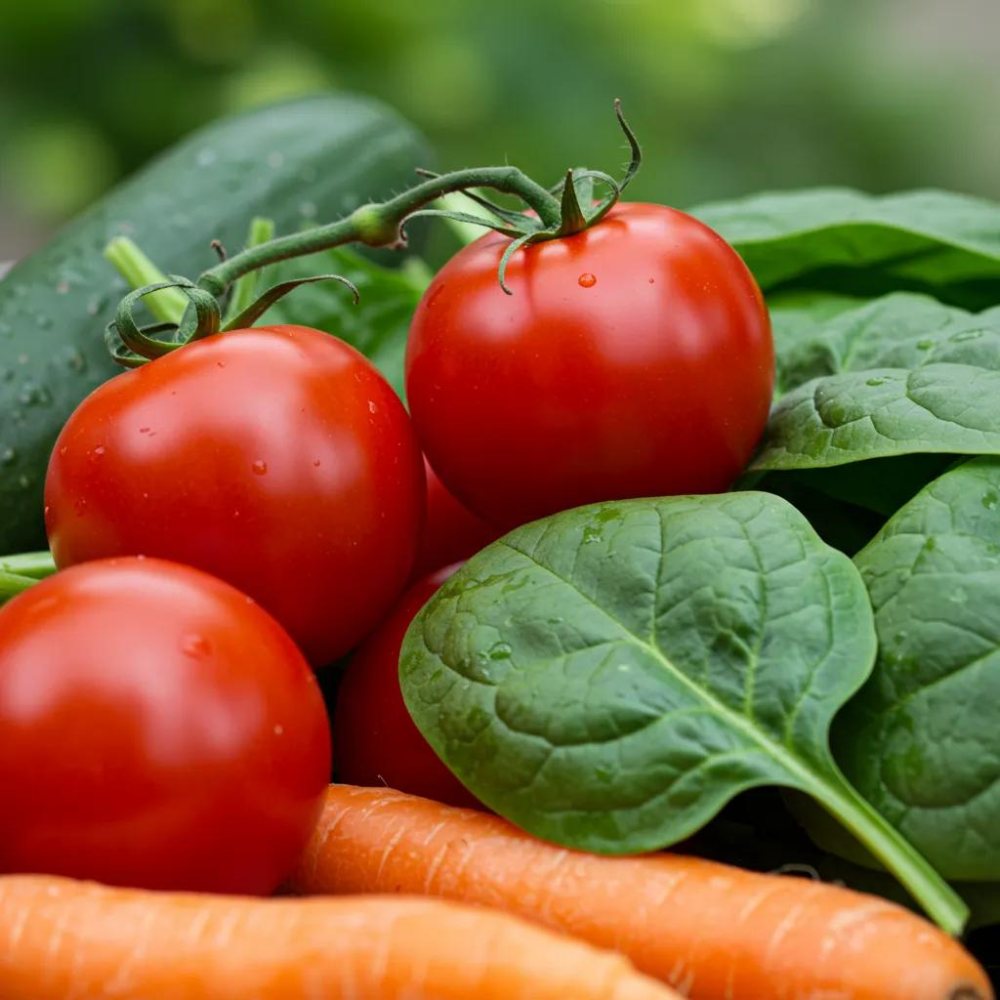
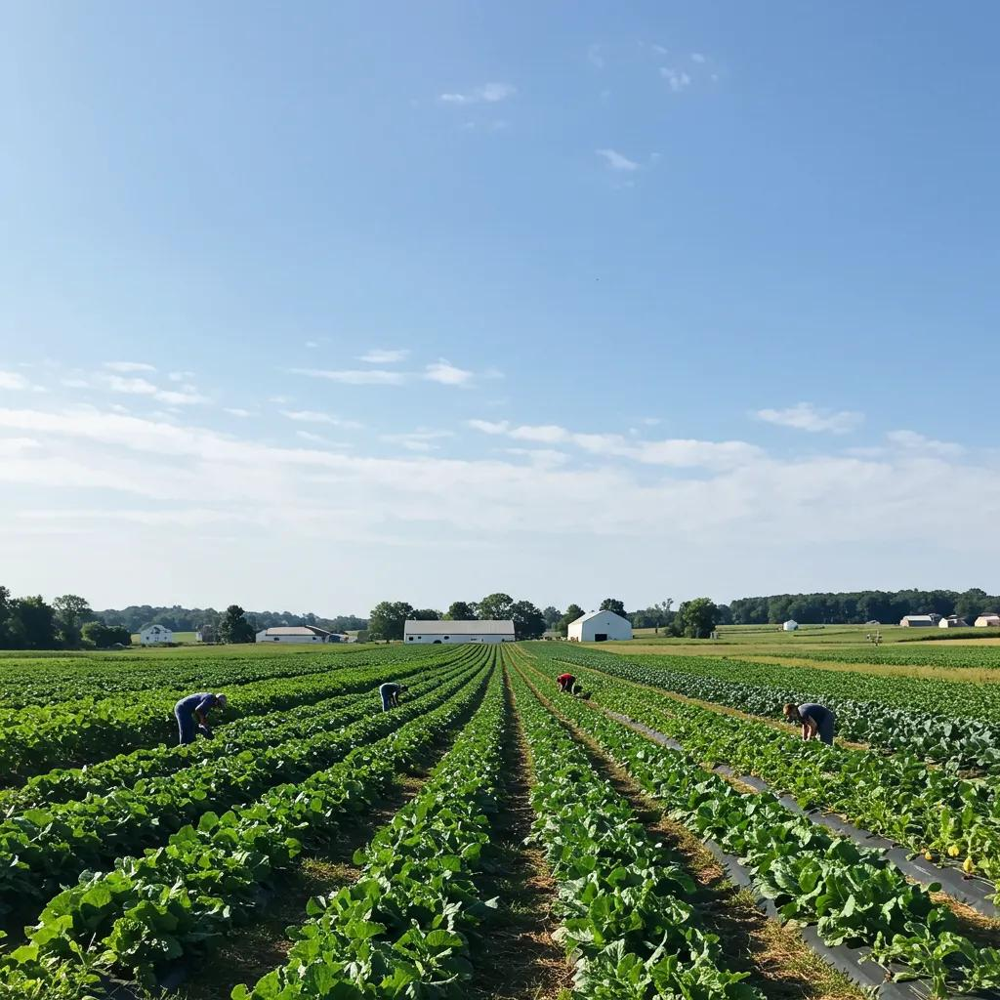

Fresh vs. Frozen: Why Our Locally-Sourced Ingredients Make All the Difference in Pittsburgh Meal Prep
When you’re looking for convenient meal prep, the choice often boils down to fresh or frozen. Fresh ingredients bring peak nutrition, incredible taste, and a real connection to our community, while frozen options can fall short on nutrients, texture, and supporting local producers. By the time we’re done, you’ll see exactly why Home Made by Colleen’s fresh meal prep is the superior choice over mass-produced frozen meals.

What Are the Nutritional Benefits of Fresh, Locally-Sourced Ingredients?
Fresh, local ingredients are packed with superior nutrients because their vitamins, minerals, and beneficial enzymes are preserved. These foods, picked at their absolute best and handled minimally, offer the highest levels of phytonutrients, antioxidants, and fiber. Imagine a tomato picked and prepared within hours – it holds significantly more vitamin C and lycopene than one that’s been frozen, directly boosting your body’s defenses and cellular health.
How Do Fresh Ingredients Retain More Vitamins, Minerals, and Enzymes?
Fresh produce keeps its nutrients intact thanks to minimal processing and immediate use.
- Vitamin Preservation: Quick chilling processes for frozen items can lead to a loss of up to 20% of vitamin C.
- Mineral Integrity: Fresh greens and root vegetables retain their full mineral content (like calcium and magnesium) because they don’t undergo blanching, which can cause nutrient loss.
- Enzyme Activity: The natural enzymes in fresh fruits and vegetables are fully active, aiding digestion and nutrient absorption, unlike enzymes that are deactivated during the freezing process.
These advantages mean your meals actively support your metabolism, immune system, and digestion, without the nutrient gaps often found in frozen meal plans.
Why Is Seasonal and Local Produce Healthier Than Frozen Alternatives?
Produce that’s in season and grown locally is harvested at its peak ripeness, offering robust flavors and nutrient density that imported frozen options rarely match. While flash-frozen foods might retain similar macronutrients, the delicate flavor compounds and micronutrients often suffer. Eating seasonally means you’re enjoying foods at their absolute nutritional best, whether it’s the higher beta-carotene in autumn squash or the potent anthocyanins in late-summer berries – both crucial for eye health and fighting inflammation.
What Scientific Evidence Supports Fresh Over Frozen Meal Prep?
Numerous studies highlight the health advantages of fresh ingredients. Research from 2024 indicated that fresh spinach retained 40% more folate than flash-frozen spinach after three months in storage. A clinical trial in 2023 comparing fresh-prepared meals with thawed frozen entrees found that the fresh group had 15% greater retention of vitamin A, along with higher ratings for taste and overall appeal. This solid scientific backing confirms that fresh meal prep maximizes both nutrient availability and customer satisfaction.
Ready to Experience the Nutritional Difference?
Discover meals packed with peak nutrients, prepared fresh for you in Pittsburgh.
Order Fresh Meals TodayHow Does Freshness Impact the Taste and Texture of Meal Prep?
Freshness dramatically enhances flavor complexity, aroma intensity, and mouthfeel by preserving delicate compounds and the natural structure of ingredients. When foods are used soon after being harvested, their natural sugars and aromatic oils are at their most concentrated, creating a perfect balance of sweetness, acidity, and savory notes. That satisfying crunch from fresh green beans, for instance, is a sign of intact cell walls and superior texture, leading to a much more enjoyable eating experience.
What Makes Fresh Meals Taste Better Than Frozen Options?
Fresh meals deliver uncompromised flavor because their volatile aromatic compounds are intact, and natural sugars haven’t leached away during thawing.
- Vibrant Aromatics – Fresh herbs like basil and parsley release essential oils that truly elevate sauces and dressings.
- Natural Sweetness – Fresh peppers and carrots keep their sugar compounds intact, offering genuine, delightful sweetness.
- Balanced Acidity – Fresh citrus and tomatoes provide bright, sharp acids that perfectly cut through richer dishes, creating a harmonious flavor profile.
These elements combine to create meals that deeply engage your senses and provide true culinary satisfaction.
How Does Texture Differ Between Fresh and Frozen Ingredients?
Fresh ingredients maintain their cellular structure, resulting in desirable crispness, tenderness, or firmness. Frozen foods, however, often develop ice crystals that break down cell walls, leading to limp vegetables or a mushy texture in proteins after thawing. For example, fresh zucchini stays delightfully firm when lightly cooked, while frozen zucchini can become watery and soft, diluting sauces and negatively impacting the overall mouthfeel.
How Do Chef-Prepared Fresh Meals Enhance Flavor and Aroma?
Expertly prepared fresh meals utilize culinary techniques like quick searing, deglazing, and precise seasoning to bring out the best in natural flavors and aromas. By incorporating peak-season local herbs and spices, chefs release their essential oils through controlled heat, building complex taste profiles. This meticulous approach, combined with immediate plating, captures the aromatic steam, making every bite an immersive sensory delight.
Taste the Uncompromised Flavor of Fresh!
Elevate your dining experience with chef-prepared meals that burst with natural taste and perfect texture.
View Our Fresh MenuWhy Is Local Sourcing Essential for Premium Meal Prep in Pittsburgh?
Sourcing locally connects you directly to Pittsburgh’s vibrant farms, ensuring ingredient traceability, bolstering our regional economy, and minimizing environmental impact. When we procure produce, meats, and dairy from within a ten-mile radius, we strengthen our community’s resilience by keeping food dollars circulating locally. This practice also enhances transparency, allowing us to personally verify the quality and farming methods of our partners.
How Does Supporting Pittsburgh Farmers Benefit the Community?
Purchasing from Pittsburgh-area growers creates a powerful cycle of economic growth and community connection. Every dollar invested in local farms:
- Supports family-run businesses and sustains vital rural employment.
- Encourages agricultural diversity through demand for unique heirloom and specialty crops.
- Reinvests profits within our community, funding local projects and educational initiatives.
These positive outcomes build a food system that truly values both people and our local environment.
What Is the Journey of Our Ingredients from Farm to Table?
Our meticulous sourcing process begins with ingredients harvested mid-morning from our trusted farm partners. They are then immediately transported to our kitchen for a thorough quality inspection. Within hours, the freshest seasonal vegetables are expertly cleaned, portioned, and incorporated into our meal recipes, always prioritizing peak freshness over extended shelf life. This streamlined journey ensures the highest quality and maximum nutrient retention, all the way to your door on our Sunday and Wednesday delivery days.
How Do Local Sourcing Practices Reduce Environmental Impact?
Local sourcing significantly cuts down on food miles and the need for excessive packaging by eliminating long-haul transportation and the reliance on heavy insulation or preservatives. Farms in the Pittsburgh region often champion sustainable practices like cover cropping, integrated pest management, and reduced-till farming, which lower carbon emissions during production. By avoiding frozen storage, Home Made by Colleen’s meals bypass energy-intensive blast-freezing processes and the need for bulky packaging materials.
Support Local, Eat Exceptional!
Discover the difference local Pittsburgh sourcing makes for your meals and our community.
Get Local Meals Learn About UsWhat Are the Common Myths About Frozen Meal Prep Compared to Fresh?
While frozen meals often promise convenience and a long shelf life, they frequently come with hidden compromises in nutrition, texture, and overall ingredient quality. Understanding these common misconceptions can empower you to choose a meal prep service that truly aligns with your health and taste preferences, rather than settling for mass-produced, preservative-laden frozen entrees.
What Are the Nutritional and Quality Trade-Offs of Frozen Meals?
Frozen meal preparation often involves blanching, a process that can leach water-soluble vitamins, and the addition of ingredients like sodium, sugar, or stabilizers to maintain texture and flavor.
- Nutrient Reduction – Blanching alone can deplete B vitamins by as much as 30%.
- Additive Exposure – Preservatives are often used to mask off-flavors that can develop during freeze-thaw cycles.
- Texture Degradation – Repeated freezing and thawing can create ice pockets that dilute sauces and affect the texture of proteins.
These trade-offs clearly illustrate why fresh, never-frozen options are superior for maintaining both nutritional integrity and deliciousness.
How Does Frozen Food Affect Convenience and Food Waste?
Frozen meals do offer the advantage of extended storage, which can help reduce household food spoilage. However, their fixed portion sizes can lead to leftovers that might not be ideal for refreezing, and the defrosting process often requires extra time and planning. Fresh meal prep services like Home Made by Colleen’s minimize waste through customizable order quantities, precise portion control, and flexible scheduling that perfectly matches your real-time family needs.
Why Choose Fresh Meal Prep Despite Frozen Food Convenience?
Fresh meal prep offers superior overall value by combining exceptional taste, optimal nutrition, and genuine flexibility. When you choose fresh, locally-sourced meals, you’re investing in community sustainability, avoiding artificial additives, and enjoying chef-prepared dishes that deliver a restaurant-quality experience right at home. This choice supports an eco-friendly food system while effortlessly accommodating busy lifestyles with simple reheating and no-commitment ordering.
Choose Fresh, Choose Quality, Choose Home Made by Colleen’s!
Don’t settle for frozen compromises. Experience the true convenience and benefits of fresh meal prep.
Discover Our Fresh Difference
How Does Home Made by Colleen’s Ensure Freshness and Quality in Every Meal?
At Home Made by Colleen’s, our entire process is built around stringent ingredient standards, rapid farm-to-kitchen workflows, and culinary excellence. By partnering exclusively with Pittsburgh-area farmers and markets, every meal we deliver embodies our promise of “fresh, never frozen,” a commitment that shines through in every single bite.
What Is Our Commitment to Using Fresh, Never Frozen Ingredients?
Our core philosophy at Home Made by Colleen’s is simple: no ingredient ever enters our kitchen in a frozen state. Produce arrives the same day it’s harvested, our proteins are sourced from suppliers who prioritize ethical animal welfare, and our grains are milled locally to guarantee ultimate freshness. This unwavering commitment ensures maximum flavor, peak nutrient density, and complete transparency in sourcing for every meal we prepare.
How Do We Source and Prepare Meals to Maximize Freshness?
Our procurement schedule is meticulously aligned with farm harvest cycles, ensuring ingredients arrive at our kitchen twice weekly. Our talented chefs then craft gourmet recipes, like our signature herb-crusted salmon or perfectly roasted autumn squash, using rapid-chill techniques to stabilize temperature without ever freezing. Meals are portioned into eco-friendly, recyclable containers and dispatched directly to our customers on Sunday and Wednesday, preserving that just-prepared freshness right up until you’re ready to enjoy them. Learn more about our delivery service.
What Benefits Do Customers Experience with Our Premium Meal Prep?
Our customers consistently rave about feeling more energized, experiencing clearer digestion, and enjoying a deeper sense of satisfaction from meals that taste incredibly vibrant and homemade. The superior quality of fresh ingredients promotes more balanced blood sugar levels, enhances nutrient absorption, and reduces the need for unhealthy snacking. Plus, the convenience of on-demand ordering without any subscription commitment empowers families to plan meals around their actual schedules, significantly reducing waste and fostering consistent healthy eating habits. Explore our menu and experience the difference!
How Does Fresh Meal Prep Support Sustainability and Reduce Food Waste?
Fresh meal prep services are champions of environmental responsibility, utilizing precise portioning, minimal packaging, and strong partnerships with sustainable growers. By aligning our meal production directly with customer demand, Home Made by Colleen’s dramatically cuts down on surplus and spoilage compared to traditional bulk frozen inventory models.
What Sustainable Farming Practices Do Our Local Suppliers Use?
Our dedicated partner farms employ regenerative practices such as organic crop rotations, cover cropping, integrated pest management, and reduced-till soil conservation methods to nurture biodiversity and enhance soil health. These methods result in richer produce, significantly lower chemical usage, and carbon sequestration that helps offset farm emissions. By collaborating with these conscientious growers, we ensure each ingredient contributes positively to a regenerative local ecosystem.
How Does Fresh Meal Prep Minimize Food Waste Compared to Frozen?
Fresh meal prep thrives on precise demand forecasting and customizable orders, which effectively eliminates large-batch overproduction. Customers select exact quantities tailored to their household needs, and any unused components, like vegetable trimmings, are thoughtfully composted or donated. This on-demand approach stands in stark contrast to frozen meal suppliers, who often face significant waste from unsold inventory or require consumers to manage disposal of unused portions.
What Is the True Environmental Impact of Local vs. Frozen Meal Delivery?
Local fresh meal delivery typically carries a significantly smaller carbon footprint compared to the industrial processes involved in frozen food distribution. When you consider the extensive food miles, the energy required for blast-freezing, and the heavy insulated packaging, fresh delivery emerges as the more sustainable option, especially for short-haul networks. By sourcing exclusively within the Pittsburgh region, Home Made by Colleen’s dramatically reduces overall greenhouse gas emissions and actively fosters a more circular food economy.
What Makes Fresh Meal Prep Services in Pittsburgh Stand Out?
Local meal prep providers distinguish themselves through their sourcing practices, portion sizes, menu flexibility, and culinary artistry. Home Made by Colleen’s truly stands apart with our no-subscription ordering, generous servings, and chef-driven recipes inspired by cherished family traditions. These unique differentiators ensure every meal meets premium standards, far surpassing the conventions of standard frozen meals.
How Does Home Made by Colleen’s Compare to Other Local Meal Prep Services?
Unlike services that rely on large industrial suppliers or mandatory subscription models, Home Made by Colleen’s exclusively uses fresh, Pittsburgh-sourced ingredients and offers convenient on-demand ordering with flexible delivery days. Our generous portions are often designed to serve two people, whereas many competitors limit you to single-serving sizes. This powerful combination of ultimate freshness, unparalleled flexibility, and hospitality-style servings defines our premium value proposition.
What Should You Look for When Choosing a Fresh Meal Delivery Service?
When you’re evaluating fresh meal prep providers, prioritize ingredient provenance, portion transparency, menu variety, and ordering flexibility. Look for services that feature seasonal produce, locally-sourced proteins, and whole-food carbohydrate sources, steering clear of those that rely on processed additives. Providers that allow single-order purchases and offer convenient delivery schedules ensure you’re only paying for exactly what you need.
How Can You Order Fresh, Locally-Sourced Meals Without a Subscription?
Home Made by Colleen’s makes it incredibly simple for customers to place standalone orders. Just choose your favorite entrees, specify the portion counts you need, and select your preferred Sunday or Wednesday delivery window. This pay-as-you-go model removes any commitment barriers and effortlessly adapts to your changing schedule, making healthy, delicious eating accessible for even the busiest households.
Fresh meal prep, powered by the incredible quality of locally-sourced ingredients, offers unmatched nutrition, flavor, and a positive community impact. By choosing to bypass frozen mass production, you’re opting for peak-freshness meals expertly crafted by chefs who deeply respect ingredient integrity. Home Made by Colleen’s premium service delivers convenient, on-demand, generously portioned creations that nourish your body, champion Pittsburgh farmers, and minimize your environmental footprint, making fresh the only choice that truly makes all the difference.
Ready to Transform Your Meals?
Join the Home Made by Colleen’s family and savor the unparalleled taste and health benefits of fresh, locally-sourced meal prep in Pittsburgh. No subscriptions, just delicious, convenient food!